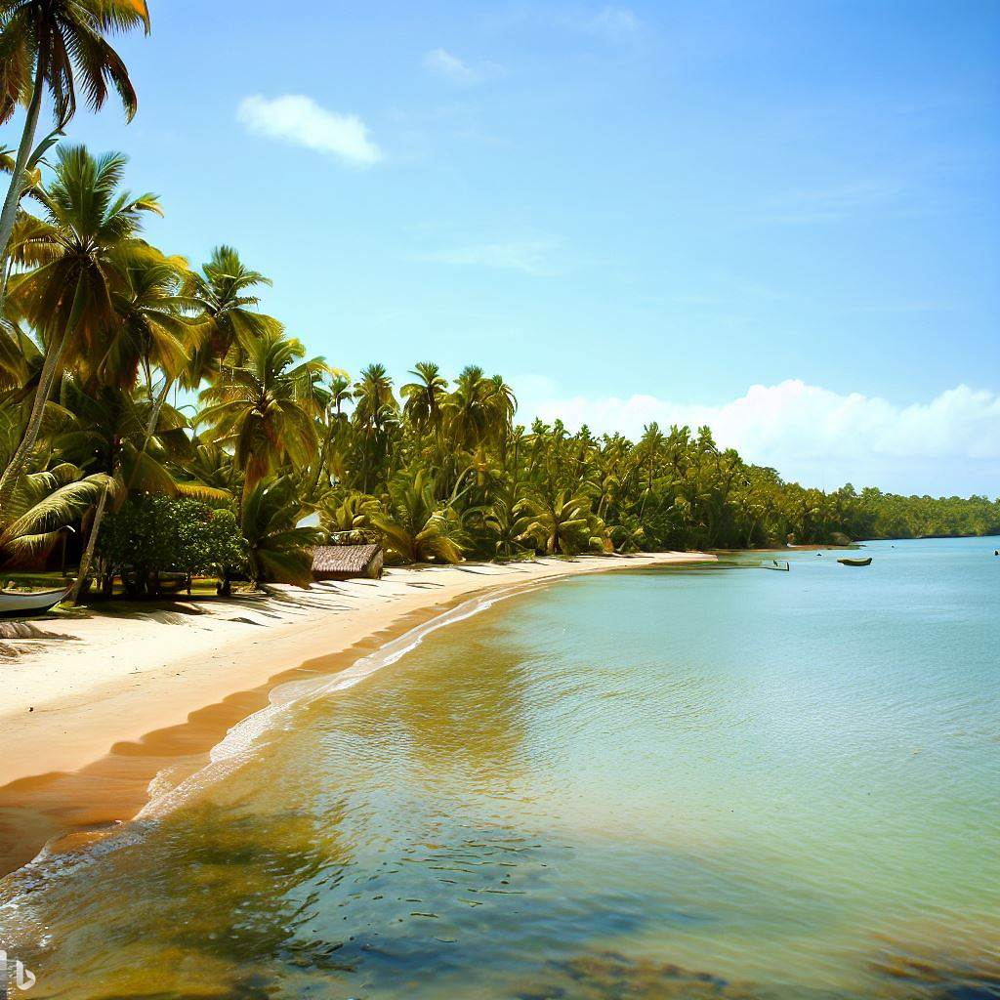
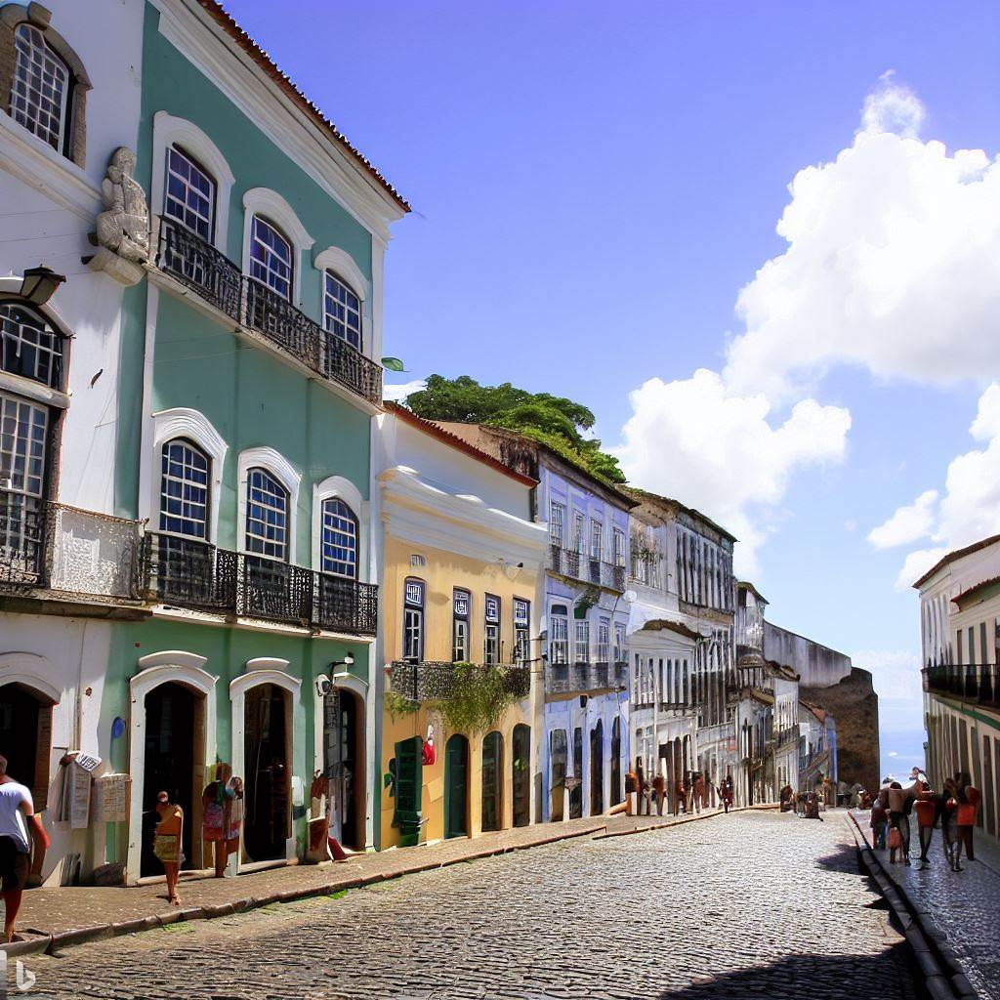
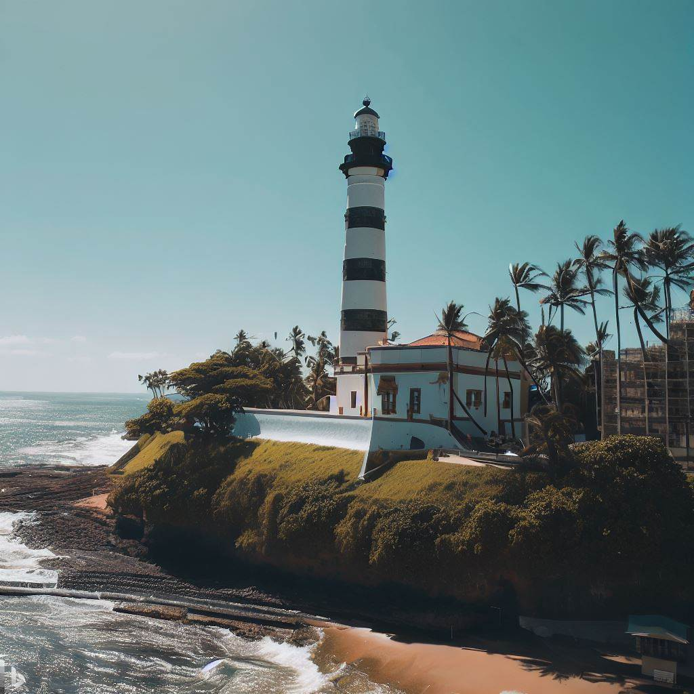

Aproveite nossos destinos
Descubra a Magia dos Pontos Turísticos da Bahia!
Seja bem-vindo a um dos destinos mais encantadores do Brasil: a Bahia! Um lugar repleto de riquezas naturais, culturais e históricas que prometem envolver os visitantes em uma experiência única e inesquecível. Venha conosco em uma jornada pela terra do axé, das praias paradisíacas, do folclore vibrante e da gastronomia irresistível.
Ilha de Boipeba

Situada ao sul da Ilha de Tinharé, Boipeba é um refúgio de tranquilidade e beleza natural. Com praias de areias claras e águas calmas, é o lugar ideal para relaxar e desfrutar de paisagens exuberantes. A vila de Boipeba é charmosa e pitoresca, com ruas de terra e casinhas coloridas. Caminhar pela praia até chegar à paradisíaca Praia de Moreré é uma experiência imperdível.
Pelourinho

Localizado na cidade de Salvador, o Pelourinho é um dos centros históricos mais famosos do Brasil. Suas ruas de paralelepípedos estão repletas de casarões coloridos, igrejas barrocas e praças encantadoras. É um lugar rico em cultura, onde você pode apreciar a arquitetura colonial e o legado afro-brasileiro, além de encontrar lojas de artesanato, restaurantes com comidas típicas e muita música ao vivo.
Farol da Barra

Localizado na ponta da península de Salvador, o Farol da Barra é uma das mais emblemáticas e históricas construções da capital baiana. Com uma história que remonta ao século XVII, o Farol da Barra é um símbolo icônico da cidade e oferece uma experiência turística rica em cultura e beleza.